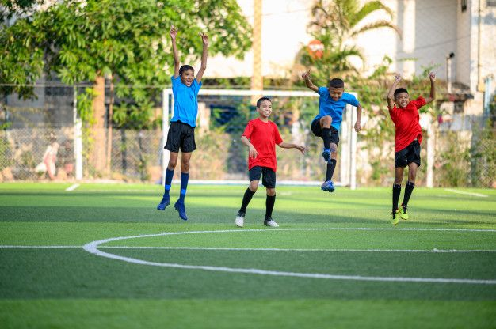

Somos uma equipe de estudantes da PUC MINAS - Coração Eucarístico que, através de um trabalho dado na matéria de TIAW, apontamos um problema que é muito real e prejudica a vida de muitas atletas, e queriamos, de uma vez por todas, criar um metodo no qual melhora a qualidade da pelada .
A pelada tem o intuito de melhorar a vida e a saúde, praticando esporte com amigos e familiares.
A prática de pelo menos um exercício físico, aliada a uma alimentação balanceada, é um hábito que todos nós, desde a infância, devemos adquirir. São diversos os benefícios físicos e mentais: nosso ânimo melhora, temos mais disposição, há liberação de hormônios importantes para o organismo, e ajuda na parte estética, ou seja, troca a gordura por massa magra.O resultado é uma pessoa mais saudável e mais feliz.
